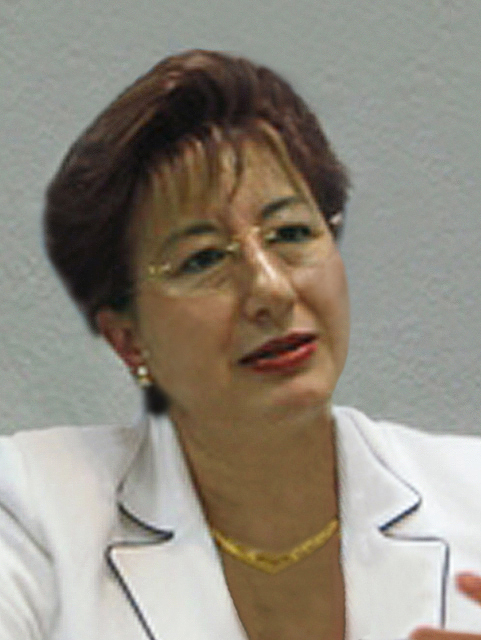

Ministra Margarita Beatriz Luna Ramos
Nació el 4 de enero de 1956 en San Cristóbal
de las Casas, Chiapas. Hija de Belisario Luna Flores, comerciante, y Josefa
Ramos Blanco, ama de casa.
Cursó la primaria, la secundaria y la preparatoria en San Cristóbal
de las Casas, Chiapas; realizó sus estudios profesionales en la Universidad
Nacional Autónoma de México, obteniendo el grado de Licenciada
en Derecho. Realizó la Especialidad en Derecho Constitucional y Administrativo
en la División de Estudios Superiores de la UNAM, y la Maestría
en la División de Estudios de Posgrado de la Facultad de Derecho de la
UNAM. Es Doctora en Derecho por la Universidad Nacional Autónoma de México,
grado que obtuvo el 17 de noviembre de 1999 con la tesis Procedencia del Juicio
de Amparo respecto de las decisiones de los Paneles Binacionales del TLCAN.
Efectuó el Curso de Especialización Judicial, en el Instituto de Especialización Judicial de la Suprema Corte de Justicia de la Nación; el Seminario de Prácticas Desleales de Comercio Internacional, impartido conjuntamente por el ITAM y el Instituto de Investigaciones Jurídicas de la UNAM; el Curso de Derecho Angloamericano, impartido por la Universidad de Austin en Texas (The University of Texas at Austin), en el Instituto de la Judicatura Federal; el Curso sobre Política en Materia de Competencia Económica, impartido en forma conjunta por el Instituto de la Judicatura Federal y la Comisión Federal de Competencia; el Curso de Derecho Internacional, denominado Derecho de los Tratados, en el Instituto de la Judicatura Federal; el Diplomado en Arbitraje Comercial Internacional, en la Escuela Libre de Derecho y Capítulo Mexicano de la Cámara Internacional de Comercio, A.C.; el Diplomado en Derecho Constitucional y Amparo, en el Instituto de la Judicatura Federal; el Diplomado sobre Derecho Norteamericano, en la Universidad Iberoamericana.
Participó en el Curso sobre Redes, Correo Electrónico y Uso de Escáner, en la Dirección General de Informática del Consejo de la Judicatura Federal; en el Curso de Didáctica Básica, en el Instituto de la Judicatura Federal; en el Curso de Relaciones Humanas, Inteligencia Emocional y Manejo Positivo del Estrés, impartidos por la Dirección General de Recursos Humanos del Consejo de la Judicatura Federal.
Dentro del Poder Judicial de la Federación se ha desempeñado como Oficial Judicial, Actuario Judicial y Secretaria Proyectista en el Juzgado Cuarto de Distrito en Materia Administrativa en el Distrito Federal, entre 1975 a 1979; Secretaria Proyectista en el Tercer Tribunal Colegiado en Materia Administrativa del Primer Circuito, entre 1979 a 1980; Secretaria Proyectista en el Segundo Tribunal Colegiado en Materia Administrativa del Primer Circuito, de 1980 a 1984; Secretaria de Estudio y Cuenta de la Primera Sala de la Suprema Corte de Justicia de la Nación, de 1984 a 1985; Secretaria de Estudio y Cuenta de la Segunda Sala de la Suprema Corte de Justicia de la Nación, de 1985 a 1986; Juez de Distrito en el Juzgado Segundo de Distrito en Materia Administrativa en el Distrito Federal, de 1986 a 1992; Magistrada de Circuito en el Cuarto Tribunal Colegiado en Materia de Trabajo del Primer Circuito, de 1993 a 1995; Magistrada durante el Proceso Electoral Federal de 1994, en la Sala de Segunda Instancia del Tribunal Federal Electoral; Magistrada del Tercer Tribunal Colegiado en Materia Administrativa del Primer Circuito, de 1995 a 2003; Consejera de la Judicatura Federal, nombrada por oposición por el Pleno de la Suprema Corte de Justicia de la Nación en 2003; fue designada Ministra de la Suprema Corte de Justicia de la Nación, por la LIX Legislatura del Senado de la República, a propuesta del Presidente de la República, el 19 de febrero de 2004; Presidenta de la Segunda Sala de la Suprema Corte de Justicia de la Nación por el periodo 2006-2007. Actualmente ocupa el cargo de Ministra del Máximo Tribunal del país, adscrita a la mencionada Segunda Sala.
Dentro del Instituto de la Judicatura Federal ha sido maestra de las siguientes materias: “Amparo Administrativo” y “Derecho Constitucional”, en el Curso de Especialización Judicial; “Módulo de Suspensión en el Juicio de Amparo” y “Amparo contra Leyes”, dentro del Curso de Especialidad en Administración de Justicia en Juzgados de Distrito, generaciones 1a., 2a., 3a. y 4a.; en el Instituto Tecnológico Autónomo de México (ITAM) ha sido catedrática en la materia “Derecho Constitucional II” (Garantías y Amparo); catedrática en la División de Estudios de Posgrado de la UNAM, en las materias “Poder Judicial” y “Juicio de Amparo”; en la Universidad Panamericana ha impartido el módulo del Posgrado en Derecho “Diversas Cuestiones Procesales dentro del Juicio de Amparo”; dentro de la Maestría de Derecho Constitucional que imparte la Universidad Marista, fue titular de la materia “Poder Judicial”; en noviembre de 2006, fue designada profesora externa adscrita al programa de posgrado para impartir la materia “Juicio de Amparo II”, en la Facultad de Derecho C-III de la Universidad Autónoma de Chiapas.
Como ponente ha participado en el Curso “Estructura y Funcionamiento del Poder Judicial”, en la División de Estudios de Posgrado de la UNAM; en el Diplomado en “Juicio de Amparo”, que impartió el Centro de Extensión Universitaria de la Universidad Iberoamericana, Laguna, de Torreón, Coahuila; en el Diplomado en “Juicio de Amparo”, de la Universidad Iberoamericana; en el Curso Regional de Actualización Laboral Zonas Noreste y Sur, del Instituto Mexicano del Seguro Social; en el Curso Regional de lo Contencioso Laboral para la Zona Centro y Noreste, del Instituto Mexicano del Seguro Social; en el Diplomado en “Juicio de Amparo”, de la Universidad de Estudios de Posgrado en Derecho, en la Ciudad de México, Distrito Federal; en “Amparo Fiscal”, en la Maestría de Derecho Fiscal de la Universidad Autónoma de Fresnillo, Zacatecas; en el Diplomado en “El Juicio de Amparo”, en la División de Educación Continua de la Universidad Nacional Autónoma de México y Colegio de Magistrados y Jueces del Poder Judicial Federal; en el Diplomado en “Juicio de Amparo”, en el Instituto Tecnológico Autónomo de México (ITAM); en el Curso de “Introducción a la Especialización Judicial”, en el Colegio de Jóvenes Estudiantes de Derecho y Nuevos Profesionistas de la Suprema Corte de Justicia de la Nación, A.C.; en Talleres de Elaboración de Sentencias de Amparo, en el Instituto de la Judicatura Federal; en el Curso de Arbitraje para Magistrados y Jueces Civiles del Tribunal Superior de Justicia del Distrito Federal.
1994 y 1995. Diversas conferencias invitada por el Gobierno del Estado de Puebla.
1996, 1997 y 1998. Diversas conferencias para el Consejo Nacional de Egresados de Posgrado en Derecho, A.C.
1996. En la Universidad Autónoma de Tlaxcala.
1997 y 1998. En la Universidad de Estudios de Posgrado en Derecho.
1998. En el Instituto Mexicano del Seguro Social.
1999. En el Instituto Federal de Defensoría Pública.
2000. En la Academia Mexicana de Derecho Fiscal.
2000. En la Universidad Popular Autónoma de Puebla (UPAEP).
2001. En la Universidad Nacional Autónoma de México, Facultad de Derecho, División de Estudios de Posgrado.
2002. En la Universidad de las Américas, en Puebla, Puebla.
2002. En la Universidad del Golfo de México, en Orizaba, Veracruz.
2002. En la Universidad Latinoamericana.
2003. En la Universidad Anáhuac de Xalapa, Veracruz.
2003. En la Asociación de Abogados de Poza Rica, A.C.
2003. En la Academia Mexicana para el Derecho, la Educación y la Cultura, A.C.
2003. La Supremacía de los Tratados Internacionales respecto del Derecho Mexicano, para el Colegio de Jueces y Magistrados del PJF.
2004. En el II Curso Iberoamericano de Justicia Electoral.
2004. Consejo de la Judicatura Federal, en el Foro “La Reforma del Estado y el Distrito Federal”.
2004. Suspensión del Acto Reclamado, en la Universidad de Baja California, en Tijuana, y la Barra de Abogados “Licenciada María Sandoval de Zarco, A.C.”.
2004. El Ministro de la Suprema Corte de Justicia de la Nación, perfil personal y profesional, nombramiento, ejercicio y remoción, en el Diplomado Teórico-Práctico en Amparo, organizado por el Colegio de Jueces y Magistrados del Poder Judicial de la Federación.
2004. En el Instituto de Ciencias Jurídicas, Campus Aragón, A.C.
2004. En el Diplomado “Derecho Judicial y Amparo”, organizado por el Colegio de Jueces y Magistrados del Poder Judicial de la Federación, Instituto Mexicano de Ciencias y Artes Aplicadas, S.A. de C.V., y el Instituto de Estudios de Derecho Social.
2005. Cumplimiento de las sentencias en materia fiscal, en la Academia Mexicana de Derecho Fiscal.
2005. En la Asociación de Abogados de Empresa, A.C.
2005. En la Academia Mexicana de Derecho Fiscal, Capítulo Durango, A.C.
2005. Control Constitucional del Sistema Judicial Mexicano, CXCI Aniversario Institucional del Supremo Tribunal de Justicia para la América Mexicana, en el Palacio de Justicia “José María Morelos”, en Morelia, Michoacán.
2005. Los Derechos Sociales, dentro del Ciclo de Conferencias sobre Derechos Sociales, en el Senado de la República.
2006. Precedentes Relevantes de la Suprema Corte de Justicia de la Nación en Materia de Expropiación, en la Universidad Autónoma de Nuevo León, Facultad de Derecho y Criminología.
2006. Criterios de la Suprema Corte de Justicia de la Nación en Materia de Publicación de Leyes, en la Reunión Nacional de Diarios, Periódicos, Gacetas y Boletines Oficiales de los Estados Unidos Mexicanos.
2006. Amparo contra Leyes, ante funcionarios judiciales del Décimo Séptimo Circuito del Consejo de la Judicatura Federal.
2006. Caso Castañeda, ante la Asociación de Abogados de Oaxaca.
2006. Inconstitucionalidad en Materia Electoral, en la Universidad Latina.
2006. Participación en el “Homenaje a Don Juan Díaz Romero”, organizado por Jueces y Magistrados del Décimo Tercer Circuito del Consejo de la Judicatura Federal.
2006. Facultad de Investigación de la Suprema Corte de Justicia de la Nación, en el Colegio de la Barra de Abogados de Hidalgo.
2006. Conferencia magistral Precedentes Relevantes de la Suprema Corte de Justicia de la Nación, Cátedra Flavio Antonio Paniagua Ruiz, en la Universidad Autónoma de San Cristóbal de las Casas, Chiapas.
2006. Tendencias Actuales del Amparo contra Leyes, dentro de la conmemoración del CXCI Aniversario del Supremo Tribunal de Justicia para la América Mexicana.
2006. Precedentes Relevantes de la Suprema Corte de Justicia de la Nación, en la Universidad Motolinía.
2006. Conferencia ante miembros de la Asociación Nacional del Notariado Mexicano, A.C.
2006. Conferencia sobre temas fiscales ante el Colegio de Contadores Públicos de Guadalajara, Jalisco.
2006. Precedentes Relevantes de la Suprema Corte de Justicia de la Nación, ante el Colegio de Secretarios de Tribunales de Circuito y Juzgados de Distrito del Vigésimo Circuito.
2007. La Mujer en el Poder Judicial de la Federación, ante el Instituto de Investigaciones Jurídicas de la Universidad Nacional Autónoma de México.
2007. Conferencia Nueva base para el cálculo del Impuesto al Activo, ante la Academia de Derecho Fiscal de Nuevo León, A.C.
2007. Conferencia Equidad y Género, ante la Comisión de Equidad y Género del Congreso del Estado de Hidalgo.
2007. La derogación del principio de Otero en el Juicio de Amparo, ante la Facultad de Derecho y Ciencias Sociales de la Universidad Michoacana de San Nicolás de Hidalgo, en Morelia, Michoacán.
2007. Conferencia Las mujeres en la impartición de justicia, en el Marco del X Aniversario del Consejo de la Judicatura del Estado, en Xalapa, Veracruz.
2007. Conferencia Naturaleza Jurídica de la Sala Laboral Burocrática, ante la Gran Comisión del H. Congreso del Estado de Tlaxcala.
2007. Conferencia Derechos Políticos de la Mujer, ante el Congreso del Estado de Chiapas.
2007. Resoluciones trascendentes de la Suprema Corte de Justicia de la Nación. Su impacto en el país (Ley de Radio y Televisión), ante la comunidad estudiantil de la Facultad de Derecho de la Universidad Nacional Autónoma de México.
2007. Conferencia magistral Decisiones Relevantes de la Suprema Corte de Justicia de la Nación (Candidaturas Independientes), Cátedra Eduardo Elizondo, en la Universidad Tecnológica de Monterrey.
2007. Conferencia El Control Constitucional de la Regulación Tributaria, dentro del Seminario sobre Derecho Constitucional Tributario en Iberoamérica, en el Tribunal Federal de Justicia Fiscal y Administrativa, en el Distrito Federal.
2007. El Control Constitucional de la Regulación Tributaria, dentro del Seminario sobre Derecho Constitucional Tributario en Iberoamérica, en la ciudad de Monterrey, Nuevo León.
2007. Conferencia Constitucionalidad en Materia Electoral, en la Sala Regional Xalapa del Tribunal Electoral del Poder Judicial de la Federación.
2007. Conferencia Resoluciones Relevantes de la Suprema Corte de Justicia de la Nación (Ley de Radio y Televisión y Tratados Internacionales), en la Barra de Abogados del Distrito Federal.
2007. Conferencia Control de la Constitucionalidad en Materia Electoral, en Villahermosa, Tabasco.
2007. Conferencia inaugural del Seminario Conmemorativo de los 160 años del Acta de Reforma de 1847, en la Barra Mexicana Colegio de Abogados, en la Ciudad de México.
2007. Conferencia La Reforma Judicial y el Sistema de Impartición de Justicia, en la ciudad de Monterrey, Nuevo León, invitada por la Asociación Nacional de Abogados de Empresa (ANADE).
2007. Conferencia magistral Cuarta Mesa Redonda Justicia Constitucional de las Entidades Federativas, en San Cristóbal de las Casas, Chiapas.
2008. Conferencia en la Comisión Federal de Electricidad con el tema Futuro Jurídico de los Organismos descentralizados para efectos del Amparo.
2008. Retos del Poder Judicial en el Actual Estado Constitucional de Derecho, en la Universidad Panamericana.
2008. Juez Constitucional en el Siglo XXI, Cancún, Quintana Roo.
2008. Conferencia magistral Control Constitucional del Sistema Judicial Mexicano, en Villahermosa, Tabasco.
1997. Conferencia PROCEDIMIENTOS Y PENAS PREVISTOS EN EL SISTEMA LEGAL MEXICANO EN MATERIA DE DERECHO AUTORAL (Proceedings and punishments seth forth in the mexican legal system on copyright matters), en el marco del Simposio Intellectual Property Rights Enforcement, Instituto Mexicano de la Propiedad Industrial y Foro de Cooperación Económica Asia Pacífico (APEC). Taipei, China.
1999. LA PARTICIPACIÓN JURISDICCIONAL EN LOS DIFERENTES TIPOS DE ARBITRAJE, Seminario de Medios Alternos para la solución de Controversias para Jueces y Empresarios, impartido en el Comité Consultivo de Controversias Comerciales Privadas del TLCAN y el Centro de Resolución de Controversias México-Estados Unidos. World Trade Center, Ciudad de México.
2002. SOLUCIÓN DE UN CASO DE ESTUDIO EN EL MARCO DE LA LEY MEXICANA (Solution to a study case under mexican law), participación en la Conferencia Judicial de la Corte de Reclamos Federales de los Estados Unidos, Universidad George Washington y la Asociación de la Barra de la Corte de Reclamos Federales de los Estados Unidos. Washington, D.C., Estados Unidos de Norteamérica.
2004. Fusión de Cortes Supremas y Consejos de la Judicatura, en la 5a. Reunión Preparatoria de la VIII Cumbre Iberoamericana de Presidentes de Cortes Supremas y Tribunales Supremos de Justicia. Antigua Guatemala, Guatemala.
2006. SOLUCIÓN DE CONTROVERSIAS EN EL MARCO DEL TLCAN, Seminario de Derecho Mercantil, Instituto de Investigaciones Jurídicas, ponente y moderadora de la Mesa “Solución de Controversias Internacionales”. México, D.F.
2006. Medios de Control Constitucional en el Derecho Mexicano. Quito, Ecuador.
2008. Conferencia de los Presidentes de los Tribunales Superiores del Mundo Sistema Judicial de los Estados Unidos Mexicanos, en los Emiratos Árabes Unidos.
Fue Tesorera del Colegio de Secretarios de Estudio y Cuenta en la Suprema Corte de Justicia de la Nación, de 1984 a 1985; Presidenta del Colegio de Secretarios de Estudio y Cuenta de la Suprema Corte de Justicia de la Nación, de 1985 a 1986; Presidenta de la Segunda Reunión Nacional de Jueces de Distrito del Poder Judicial de la Federación, en 1992; Decana de los Jueces de Distrito del Poder Judicial de la Federación en la República Mexicana, en 1992; Miembro del Comité de Doctorado de Derecho Constitucional y Administrativo (anterior plan de estudios), en la Universidad Nacional Autónoma de México, Facultad de Derecho, División de Estudios de Posgrado, de 2000 a la fecha; Miembro del Comité de Doctorado de Derecho Constitucional y Administrativo (nuevo plan de estudios), de la Universidad Nacional Autónoma de México, Facultad de Derecho, División de Estudios de Posgrado, de 2000 a la fecha; Miembro activo de la Asociación Nacional de Doctores en Derecho, A.C., de 2002 a la fecha; Miembro activo del Claustro Académico de Doctores en Derecho de la Facultad de Derecho de la Universidad Nacional Autónoma de México, de 2002 a la fecha; fue Miembro del Consejo Técnico de la Universidad Marista, Facultad de Derecho, en 2002-2003; fue Miembro Fundador del Colegio de Profesores de la Universidad Marista, Facultad de Derecho, en 2002; Académica Honoraria de la Academia Mexicana de Derecho Fiscal, desde el 2005.
En 1992, se publicó en la Memoria de la 3a. Reunión Nacional de Jueces de Distrito del Poder Judicial de la Federación, el artículo Procedencia del Juicio Ordinario Federal en Materia Administrativa.
En 1997, se publicó en la Revista del Centro de Estudios de Actualización Jurídica, el artículo La prueba pericial en el incidente de daños y perjuicios previsto en el artículo 105, último párrafo, de la Ley de Amparo.
En 2002, se publicó en The George Washington International Law Review, Special Edition, The Court of Federal Claims, 15th Judicial Conference, Solution to a study case under mexican law, bajo el título Suing the sovereign in Mexico, por la Universidad George Washington, Washington, D.C., USA, Volumen 35, Número 3, 2003.
En 2003, se publicó Los Derechos Políticos de la Mujer, en la Revista “Derecho y Cultura”, Números 11 y 12, Instituto de Investigaciones Jurídicas, UNAM; Academia Mexicana para el Derecho, la Educación y la Cultura, A.C.; Tribunal Electoral del Estado de Puebla; Instituto Electoral del Estado de Puebla.
En 2005, se publicó el artículo Los derechos sociales, que fue impartido en el Ciclo de Conferencias sobre Derechos Sociales, organizado por el Senado de la República, en el Distrito Federal.
En 2006, se publicó el artículo Los Derechos Sociales en la Constitución Mexicana, en JuríPolis, Revista de Derecho y Política del Departamento de Derecho, Tecnológico de Monterrey, Campus Ciudad de México.
En 2006, se publicó el Comentario al artículo 1o. de la Ley General del Sistema de Medios de Impugnación en Materia Electoral Comentada, publicada por el Colegido Nacional de Magistrados de Circuito y Jueces de Distrito del Poder Judicial de la Federación.
1995. Reconocimiento por trayectoria, otorgado por el Poder Judicial de la
Federación por 20 años de servicio.
2000. Reconocimiento del Poder Judicial de la Federación por 25 años
de servicio.
2004. Reconocimiento por trayectoria, otorgado por la Universidad Autónoma
de Chiapas, Facultad de Derecho.
2004. Reconocimiento otorgado por la Asociación Nacional de Doctores
en Derecho, A.C., a la trayectoria y designación como Ministra de
la Suprema Corte de Justicia de la Nación.
2004. Reconocimiento otorgado por el Instituto Nacional de Ciencias Penales
y el Instituto Nacional de las Mujeres, en el Homenaje a la Trayectoria de
Mujeres Mexicanas en Materia de Impartición y Procuración de
Justicia.
2004. Distinción “HUÉSPED DISTINGUIDO DE TUXTLA GUTIÉRREZ,
CHIAPAS”, otorgada por el Municipio de Tuxtla Gutiérrez, Chiapas.
2004. Distinción “PRESEA TEPANTLATO AL MÉRITO JURÍDICO”,
otorgada por el Instituto de Investigaciones Jurídicas, Campus Aragón,
A.C.
2005. Reconocimiento como visitante distinguido, otorgado por el Ayuntamiento
de Boca del Río, Veracruz.
2005. Reconocimiento otorgado por la Generación de Abogados 1978-1983,
Asociación Licenciado Larios Valencia, A.C., de la Universidad de
Guadalajara.
2005. Reconocimiento del Poder Judicial de la Federación por 30 años
de servicio.
2005. Distinción “MUJERES CONTRIBUYENDO POR MEXICO”, otorgada
por el Club Rotario de Jardines del Pedregal.
2006. Reconocimiento otorgado por la Suprema Corte de Justicia de la Nación
en el homenaje a “Las Diez Primeras Ministras de la Suprema Corte de
Justicia de la Nación”.
2006. Distinción “MEDALLA DOCTOR MANUEL VELASCO SUÁREZ”,
otorgada por el H. Ayuntamiento Constitucional de San Cristóbal de
las Casas, Chiapas.
2006. Distinción “MIEMBRO HONORARIO DE LA ACADEMIA DE DERECHO
FISCAL”.
2006. Reconocimiento por el Ciclo de Conferencias en Derecho Constitucional
y Electoral, en la Barra de Abogados “Licenciada María Sandoval
de Zarco, A.C.”, en Tijuana, Baja California.
2006. Reconocimiento de la Asociación de Tribunales y Salas Electorales
de la República Mexicana, A.C., por su trabajo para fortalecer el
estado constitucional democrático de derecho en México.
2006. Reconocimiento de la Universidad Autónoma de Chiapas, Facultad
de Derecho, por su participación en la presentación de la obra
comentada Enciclopedia Jurídica Electoral de México, en San
Cristóbal de las Casas, Chiapas.
2006. Reconocimiento otorgado por el Colegio de Contadores Públicos
de Guadalajara, Jalisco, por su participación en el XI Magno Evento
Fiscal.
2006. Reconocimiento por su participación como ponente en el Curso
de Actualización Notarial 2006, otorgado por la Asociación
Nacional del Notariado Mexicano, A.C.
2007. Reconocimiento de la Facultad de Derecho de la Universidad Nacional
Autónoma de México, como Miembro Fundador del Claustro de Académicos
con Grado de Derecho.
2007. Reconocimiento otorgado por la Universidad Autónoma de Chiapas,
como titular de la materia “Juicio de Amparo II”, de la Maestría
en Derecho, en San Cristóbal de las Casas, Chiapas.
2007. Reconocimiento otorgado por la Universidad Autónoma de Baja
California, Facultad de Ciencias Administrativas y Sociales, Unidad Ensenada,
por la recepción de los alumnos en la Suprema Corte de Justicia de
la Nación.
2007. Reconocimiento por trayectoria, otorgado por la Federación Mexicana
de Colegio de Abogados, A.C., en Morelia, Michoacán.
2008. Reconocimiento por su destacada intervención en la Conferencia
Magistral Experiencia del modelo acusatorio en Latinoamérica del Congreso
El Sistema de Justicia Penal en México: Retos y Perspectivas.
2008. Reconocimiento otorgado por la Universidad Panamericana por su participación
en el Programa de Cultura y Actualización Jurídica.
2008. Reconocimiento por su destacada participación en el Primer Encuentro
Nacional e Internacional de Magistradas y Juezas, México, D.F.